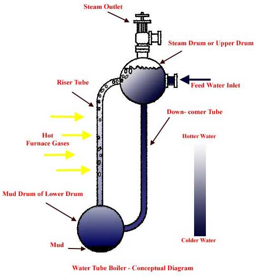
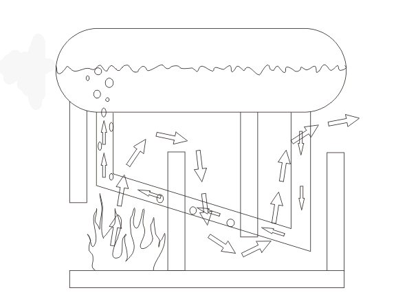
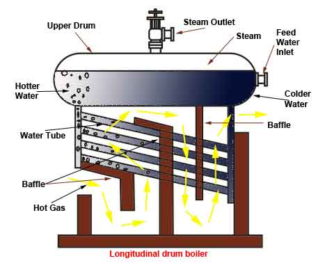
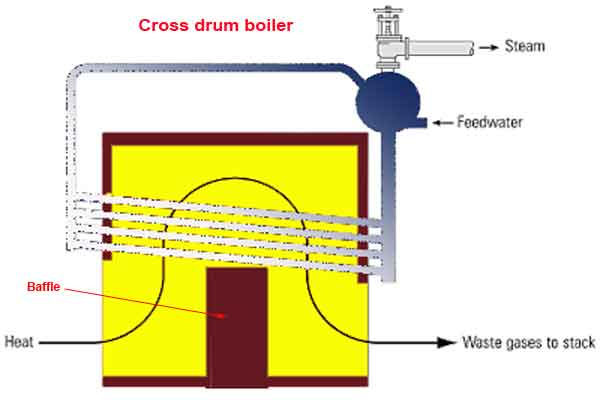
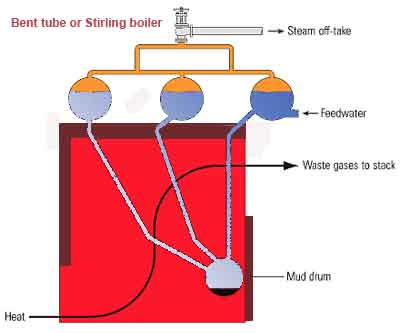

• Working Principle
• Types
• Horizontal or Longitudinal or Babcock – Wilcox
Construction of Babcock – Wilcox Boiler
Working Principle of Longitudinal Drum Water Tube Boiler
Cross Drum Water Tube Boiler
Construction of Cross Drum Water Tube Boiler
Working Principle of Cross Drum Boiler
Bend Tube Boiler or Sterling Boiler
Construction of Bend Tube Boiler
Working Principle of Bent Tube or Stirling Boiler
Capacity of Stirling Boiler
A water tube boiler is such kind of boiler where the water is heated inside tubes and the hot gasses surround them. This is the basic definition of water tube boiler. Actually this boiler is just opposite of fire tube boiler where hot gasses are passed through tubes which are surrounded by water.
Advantages of Water Tube Boiler
There are many advantages of water tube boiler due to which these types of boiler are essentially used in large thermal power station.
1) Larger heating surface can be achieved by using more numbers of water tubes.
2) Due to convectional flow, movement of water is much faster than that of fire tube boiler, hence rate of heat transfer is high which results into higher efficiency.
3) Very high pressure in order of 140 kg/cm2 can be obtained smoothly.
Working Principle of Water Tube Boiler
The working principle of water tube boiler is very interesting and simple.
Let us draw a very basic diagram of water tube boiler. It consists of mainly two drums, one is upper drum called steam drum other is lower drum called mud drum. These upper drum and lower drum are connected with two tubes namely down-comer and riser tubes as shown in the picture. Water in the lower drum and in the riser connected to it, is heated and steam is produced in them which comes to the upper drums naturally. In the upper drum the steam is separated from water naturally and stored above the water surface. The colder water is fed from feed water inlet at upper drum and as this water is heavier than the hotter water of lower drum and that in the riser, the colder water push the hotter water upwards through the riser. So there is one convectional flow of water in the boiler system. More and more steam is produced the pressure of the closed system increases which obstructs this convectional flow of water and hence rate production of steam becomes slower proportionately. Again if the steam is taken trough steam outlet, the pressure inside the system falls and consequently the convectional flow of water becomes faster which result in faster steam production rate. In this way the water tube boiler can control its own pressure. Hence this type of boiler is referred as self controlled machine.

Types of Water Tube Boiler
There are many types of water tube boiler .
1) Horizontal Straight Tube Boiler
2) Bent Tube Boiler.
3) Cyclone Fired Boiler.
Horizontal Straight Tube Boiler again can be sub-divided into two different types, such as
i. Longitudinal Drum Boiler
ii. Cross Drum Boiler.
Bent Tube Boiler also can be sub-divided into four different types, such as
i. Two Drum Bent Tube Boiler.
ii. Three Drum Bent Tube Boiler.
iii. Low Head Three Drum Bent Tube Boiler.
iv. Four Drum Bent Tube Boiler.
Horizontal or Longitudinal or Babcock – Wilcox Water Tube Boiler
Construction of Babcock – Wilcox Boiler
Babcock – Wilcox Boiler is also known as Longitudinal Drum Boiler or Horizontal Tubes Boiler . In this type of boiler, one cylindrical drum is longitudinally placed above the heat chamber. In rear of the drum down comer tube is filled and in front of the drum riser tube is fitted as shown in the figure. These down-comer tube and riser tube are connected to each other by 5o to 15o straight water tubes as shown in the figure.
Working Principle of Longitudinal Drum Water Tube Boiler

Working principle of Babcock – Wilcox Boiler depends upon thermonyphon principle. The longitudinally placed drum as mentioned in the construction of longitudinal drum boiler, is fed by colder mater at its rear feed water inlet. As the colder water is heavier it falls down through down-comer fitted at the rear part of the drum. From down-comer the water enters in to horizontal water tube where it becomes hot and lighter. As the water becomes lighter, it passes up through these inclined horizontal tubes and ultimately comes back to the boiler drum through riser. During travelling of water through inclined water tubes, it absorbs heat of the hot gases, surrounds the water tube, consequently steam bubbles are created in these tubes. These steam bubbles then come to the steam drum through riser and naturally separated from water and occupies the space above the water surface in the longitudinal drum of Babcock – Wilcox Boiler.
Cross Drum Water Tube Boiler
Construction of Cross Drum Water Tube Boiler
Cross Drum Boiler is essentially a variant of the Longitudinal Drum Boiler. In Cross Drum Boiler the steam drum is placed at cross ways to the heat source as shown in the figure. Here, the down-comer is fitted on the bottom of the drum and riser is fitted on the top of the drum via a horizontal tube as shown in the figure. 5o to 15 o inclined water tubes are connected with down-comer and riser tubes in same manner of Babcock-Wilcox boiler.

Working Principle of Cross Drum Boiler
The working principle of cross drum boiler is same as longitudinal drum boiler .
1) The feed water is fed to the cross drum through feed water inlet.
2) Then this water comes down through the down-comer pipe and enters into inclined water tube placed in hot chamber.
3) Here, the water becomes hot and steam is produced in the water which comes into steam chamber.
4) Here in the steam drum steam is separated from water in natural way.
Bend Tube Boiler or Sterling Boiler
Bend Tube Boiler or Sterling Boiler is the developed version of water tube boiler. The working principle of bend tube boiler is more or less same as other water tube boilers, but it utilizes four drums.

Construction of Bend Tube Boiler
Three drums are placed on the heat source as shown on the figure. Fourth drum is placed inside the heat chamber and this fourth drum is connected to upper three steam drums with help of bend water tube. Upper three drums are connected with equalizer tubes as shown in the figure. Steam is taken from equalizer tubes.
Working Principle of Bent Tube or Stirling Boiler
The feed water first enters into right most upper drum. Due to more density this water comes down in the lower water drum. The water within that water drum and the connecting pipes to the other two upper drums, are heated up and consequently steam bubbles are produced. This is the most basic working principle of bent tube boiler .
Capacity of Stirling Boiler
Capacity of Stirling Boiler is much higher than Babcock - Wilcox boiler as high as 50,000kg per hour and pressure as high as 60kg/cm 2.
 by
by